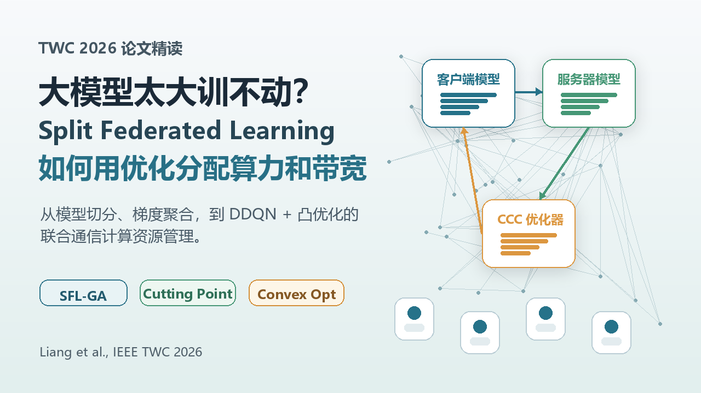

论文精读
SFL
Split Federated Learning 如何用 DDQN + 凸优化联合分配算力与带宽
论文：Communication-and-Computation Efficient Split Federated Learning in Wireless Networks: Gradient Aggregation and Resource Management, IEEE TWC, 2026.
文章重点看 SFL-GA 如何减少 smashed data 频繁传输带来的通信开销，并把切分点、带宽和算力放在同一个优化框架里。